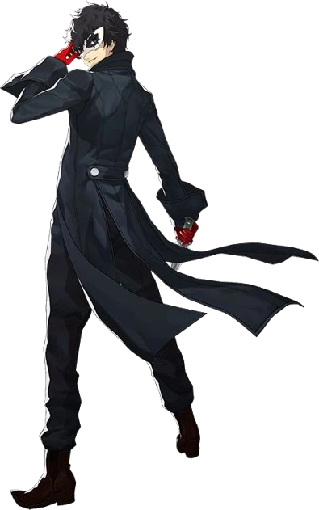
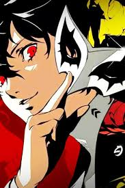

Joker é o protagonista de Persona 5, um jovem inicialmente rotulado como um delinquente, embora essa descrição não seja precisa. Preso injustamente sob acusações criminais, ele é confrontado por uma voz misteriosa que o encoraja a recordar sua vida para escapar de um destino sombrio. Como líder dos Phantom Thieves, Joker desempenha um papel central na trama de Persona 5, liderando o grupo em missões para roubar corações corrompidos e confrontar as injustiças sociais.
O protagonista de Persona 5, conhecido como Joker no jogo, é um jovem inicialmente visto como um delinquente, embora não seja verdade. Ele é preso injustamente e, durante o interrogatório, uma misteriosa voz o instrui a lembrar de eventos de sua vida para escapar com sucesso. Ao recordar seu passado,
descobre-se que ele foi expulso de sua antiga escola e agora frequenta a Academia Shujin, onde vive em uma cafeteria sob a tutela de Sojiro Sakura. Sua vida muda quando ele começa a experimentar eventos estranhos que o levam a um "mundo distorcido", onde ele e seus amigos, os Phantom Thieves, combatem a manifestação dos desejos distorcidos das pessoas.
Joker é descrito como um jovem de estatura mediana, pele clara e porte físico magro com cabelos pretos levemente encaracolados que parecem estar sempre bagunçados. Seus olhos são grandes e escuros, mudando para âmbar em certas ocasiões. Ele é frequentemente visto usando seu uniforme escolar, 
composto por uma camiseta branca, blazer preto com botões vermelhos e calças xadrez escuras com linhas vermelhas. Quando utiliza suas habilidades, ele veste um sobretudo preto de gola alta, camisa com botões dourados, calças e sapatos pretos, além de luvas vermelhas. Ele também usa óculos e uma máscara semelhante a do Carnaval sobre seus olhos quando está transformado.

Joker, como protagonista de Persona 5, exibe uma variedade de traços de personalidade, influenciados pelas escolhas do jogador. Ele é destemido e audacioso, demonstrando coragem ao enfrentar desafios. Em suas lembranças, mostra-se calmo e indiferente, mas também gentil, ajudando os outros sem hesitação. Possui um forte senso de justiça e é leal aos seus amigos, liderando-os com determinação. Apesar de sua rebeldia interna, revelada pelo surgimento de Arsene, é vista como uma qualidade positiva. Seu comportamento pode variar de acordo com as escolhas do jogador, podendo ser desinteressado, brincalhão ou sarcástico em seus diálogos.
Joker, como protagonista de Persona 5, possui habilidades excepcionais que se desenvolvem ao longo do jogo. Ele é atlético, apresenta equilíbrio e força física notáveis, sendo capaz de executar movimentos e golpes precisos em combate corpo a corpo. Utiliza uma faca ou espada para ataques de curta distância e uma arma de fogo para investidas de longo alcance. Além disso, tem a capacidade de invocar Personas, começando com Arsene, que concede poderes destrutivos e evolui com a experiência. Joker também desenvolve um sexto sentido que o permite perceber coisas anteriormente invisíveis. Conforme avança no jogo, suas habilidades continuam a se expandir.